DiffusionGemma 技术报告：从 Gemma 4 微调出来的高速文本扩散模型
DiffusionGemma Technical Report
阅读状态、进度与收藏只保存在你的浏览器里。本页引用的第三方网页（模型卡、发布博客、相关论文摘要）均于 2026-10-20 查阅；本页依据报告 arXiv v1（2026-07-31，目前唯一版本）。
逐节精读
这部分按报告的章节顺序，用本站自己的话把整份报告从头讲一遍。读懂某个概念需要的背景知识，会在第一次用到它之前单独讲清楚（青色框）。每个结论都尽量说出“因为什么、所以什么”。报告在 arXiv 上以 CC BY 4.0 许可发布，所以页面里标“原文图”的图片直接取自报告，并说明怎么看；原图没有画到的概念，用本站自己画的示意图补上。标“推算”的数字是本站根据报告数据算出来的，标“读自原图”的数字是从原图上读出的近似值，都不是报告原话。每节末尾有英文原文的链接。
0 导读：把一台现成的自回归模型，改造成“整块生成”的扩散模型
今天几乎所有大语言模型都是自回归（AR）模型：它们一次只写一个 token（大致是一个词或半个词），写完一个才能写下一个。服务很多用户时，这不是大问题，因为可以把很多用户的请求拼成一个批一起算；但只服务一个用户时，GPU 每一步都要把整个模型的权重从显存搬一遍，只为了算出一个 token，绝大部分算力都在空等。文本扩散模型换了一种做法：先摆出一整段随机的“草稿”，再经过若干轮迭代，每一轮同时修改所有位置，直到草稿变成通顺的文字。因为每一轮都同时处理很多位置，搬一次权重能换来很多个 token，所以在单用户场景下可以快得多。
DiffusionGemma 是 Google DeepMind 在 2026 年 6 月发布权重、7 月底放出技术报告的一个开放权重文本扩散模型。它不是从零训练的，而是拿已经发布的自回归模型 Gemma 4 26B A4B（总参数 252 亿、每个 token 只激活约 38.5 亿的混合专家模型）做起点，用不到原模型训练 token 总量 10% 的数据把它改造成扩散模型。改造后的模型一次生成一块 256 个 token 的“画布”，平均约 12 轮去噪就能写完一块；报告给出的头条数字是：在一张 H100 上、FP8 精度、一次只服务一个请求时，七个基准平均每秒输出约 1,479 个 token，每次前向平均产出 19.74 个 token；同一张卡上的原始 Gemma 4 只有 204 token/秒，加上多 token 预测（MTP）的投机解码也只有 303 token/秒。代价是质量下降：例如 AIME 2026 从原模型的 88.3 降到 69.1。
这份报告值得细读，有三个原因。第一，它是第一份把“从 AR 模型初始化 → 块状画布 → 少步化 → 强化学习”这条工业配方连同开放权重一起完整公开的报告，前面的 Mercury 和 Seed Diffusion 都只给结果、不给权重，方法也披露得很少。第二，它在设计上有几处和多数开源扩散语言模型不同的选择：用均匀噪声而不是掩码噪声，用同一套权重同时充当“因果编码器”和“双向解码器”，用熵来决定每一步接受多少个 token，并把强化学习和“采样步数蒸馏”合并成一个阶段 SD·RL。第三，它对“快”这件事给出了少见的完整账本：每一步比 AR 慢多少、慢在哪些算子、并发多高时优势消失（约 32 个并发请求），都有数据。
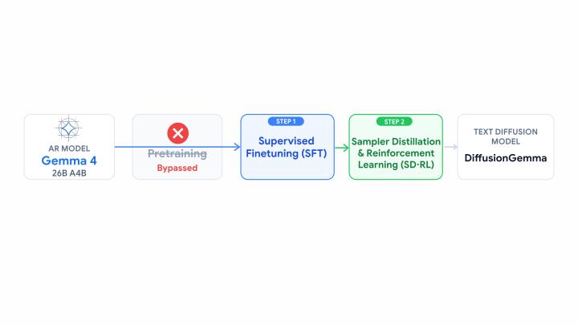
读完这部分，你应该能回答这几个问题：
- 为什么单用户时 AR 模型慢，扩散模型又凭什么能快？优势为什么会在高并发时消失？
- “均匀噪声”和更常见的“掩码噪声”有什么区别，DiffusionGemma 为什么选前者？
- 同一套权重怎么同时当“编码器”和“解码器”，画布之间的 KV 缓存怎么接上？
- 熵界采样器每一步怎样决定接受哪些 token，自适应停止又怎样决定何时停？
- SFT 之后的模型为什么在少步时会崩，SD·RL 怎样同时提高质量和速度？
- 1,479 token/秒、“比 Mercury 2 快约 2.5 倍”、“约 32 个并发后 AR 反超”这些数字分别是在什么条件下测的，哪些是厂商自测、哪些有第三方数据，哪些关键信息报告没有公开？
1 引言：单个请求为什么慢，DiffusionGemma 想占哪个位置
模型每生成一个 token，都要把参与计算的全部权重从显存读到计算单元一次。读数据的速度由显存带宽决定，计算的速度由算力决定。一次只算一个 token 时，读进来的每个权重只被用来做一两次乘加，计算量太小，GPU 大部分时间在等数据，这种状态叫访存受限（memory-bound）。服务很多用户时，可以把几十上百个请求拼成一个批，读一遍权重同时为所有请求各算一个 token，读权重的开销被摊薄，吞吐量就上去了（这一点在 vLLM 精读 §1 有详细的示意图）。但单个用户感受到的速度，即“每用户每秒多少 token”，并不会因为别人也在用而变快；在本地电脑、单人使用或对延迟要求极高的场景里，批开不大，GPU 就只能空转。
投机解码的思路是：先用一个便宜的“草稿模型”猜出后面若干个 token，再让大模型一次前向同时检查这些猜测，猜对的前缀全部接受。因为大模型检查 8 个 token 和生成 1 个 token 的时间差不多（同样受访存限制），只要猜得准，一次前向就能产出好几个 token。衡量这件事的指标叫 TPF（tokens per forward，每次前向产出的 token 数）。普通 AR 解码的 TPF 恒为 1。报告引用 EAGLE-3 的结果说，草稿长度为 8 时，投机解码一般能做到每次前向 3 到 6 个 token。它的局限有两个：草稿模型自己也是一个一个地写，越想猜得准，草稿模型就得越大越慢；而一次并行猜出多个位置的草稿方法，越靠后的位置被接受的比例越低。
Gemma 4 自带的 MTP（多 token 预测）也是一种投机解码：模型额外学会预测后面几个 token，用作草稿。本报告的对照实验里，带 MTP 的 Gemma 4 的 TPF 只有 1.40（表 3，在 SPEED-Bench 上测得）；并发实验的图 12 注明 MTP 的草稿长度为 4。
Gemma 4 26B A4B 是一个混合专家（MoE）模型：它的前馈层被拆成 128 个“专家”小网络，外加 1 个所有 token 都要经过的共享专家；每个 token 由路由器挑出其中 8 个专家来算。所以模型总共有约 252 亿参数（“26B”是取整后的型号名），但每个 token 只用到约 38.5 亿（“A4B”即 active 4B）。这样做的好处是计算量和读取量按激活参数算，比同等总参数的稠密模型便宜得多（MoE 的原理可参考 DeepSeek-V3 精读）。后面 §6 会看到，这个设计对扩散模型反而不太友好：一块画布里有 256 个 token，它们各自挑的专家加起来会覆盖很大一部分专家，单步要读的专家权重比 AR 多得多。
报告给出的定位。作者把当时的文本扩散模型分成两类：Gemini Diffusion 和 Mercury 这样的闭源模型，只能通过 API 使用；开源模型（例如 LLaDA 系列和 Nemotron-Labs-Diffusion）要么推理和多模态能力有限，要么没有真正兑现扩散“极低延迟”的承诺，或者两者都有。作者认为在 DiffusionGemma 之前，还没有一个“既聪明、又特别快、又开放”的文本扩散模型。报告的第一张图就是为这个论点服务的。
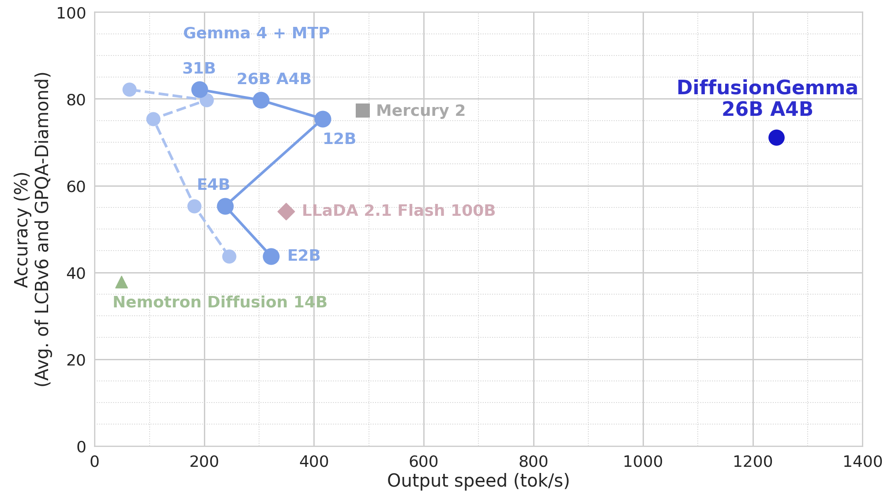
报告声称的贡献。按引言的说法，DiffusionGemma 一次输出 256 个 token 的块，平均约 12 次前向写完一块，所以平均 TPF 约 20，远高于投机解码的 3 到 6。前向次数大幅减少，抵消了每次前向更贵的代价，于是在一张 H100 上达到约 1,500 token/秒。引言还提到，第三方推理服务商 Unsloth 的早期测试在 NVIDIA RTX 6000 上做到了最高约 2,000 token/秒；这个数字的测量条件报告没有给出。
为什么从 AR 模型初始化。从零预训练一个扩散语言模型非常昂贵，所以常见做法是从现成的 AR 模型出发改造（本站已有的例子：Dream 7B 从 Qwen2.5 改造，LLaDA2.0 从 Ling 2.0 改造，Fast-dLLM v2 和 SDAR 用很少的数据把 Qwen 模型改造成块扩散模型）。DiffusionGemma 直接从 Gemma 4 26B A4B 最终发布的、已经做完后训练的权重出发，沿用同一个 Transformer 骨架，让同一套权重既能做“上下文编码”时的因果注意力，又能做扩散时的双向注意力。训练分两段：先 SFT，后 SD·RL，合计用掉的 token 不到 Gemma 4 训练总量的 10%。报告没有给出这个 10% 对应的绝对 token 数。
| 原文表 1：参数量 | 数值 | 原文表 2：推荐的采样超参 | 数值 |
|---|---|---|---|
| 总参数 | 25.2B | 画布长度 | 256 |
| 激活参数（含自条件模块，不含视觉编码器） | 3.85B | 最大去噪步数 \(N\) | 48 |
| 视觉编码器 | 550M | 自适应停止的熵阈值 | 0.005 |
| 词嵌入 | 740M | 选 token 的熵预算 \(b\) | 0.1 |
| 自条件模块 | 7.8M | 温度（线性） | 0.8 → 0.4 |
| 激活 / 总专家数 | 8 / 128 + 1 共享 | 实际平均去噪步数（随任务变化） | 约 12 |
词表有 26.2 万个 token（报告表 1 注释）。模型卡另外给出：30 层，滑动窗口 1,024 个 token，上下文最长 256K，输入支持文本和图像（模型卡正文还提到视频输入）。
发布方式。权重以 Apache 2.0 许可发布在 Hugging Face。报告说写作时模型才发布几周，已经有人拿它做下游应用，例如多语言语音识别和放射科报告的交互式起草。时间线上要注意：权重和发布博客在 2026 年 6 月 10 日前后就公开了（Hugging Face 仓库创建于 6 月 9 日，Google 博客发表于 6 月 10 日），技术报告晚了约七周（arXiv 首版 7 月 31 日）。所以下面会看到，有两篇第三方或合作分析论文比技术报告本身还早。
2 离散扩散：给文字加噪、再一步步去噪是怎么回事
扩散模型由两个方向相反的过程组成。前向过程是人为设计好的：从一条干净数据出发，逐步加噪，直到完全变成噪声；它不需要学习，任何噪声强度下的带噪样本都能直接算出来。反向过程是要学的：从纯噪声出发，一步步去噪，变回像样的数据。训练时，取一条干净文字，随机选一个噪声强度把它弄脏，让网络学着从脏的版本猜出干净的版本；生成时，从纯噪声出发，反复调用网络，每一步去掉一点噪声。
对文字加噪主要有两种做法。掩码噪声（absorbing / masked）：把一部分 token 换成一个特殊的 [MASK] 符号，噪声越大换得越多；MDLM、LLaDA、Dream 都用这种。均匀噪声（uniform / multinomial）：把一部分 token 换成从整个词表里随机抽的另一个真实 token；D3PM 最早系统地讨论过这两种转移矩阵，Duo 是近年把均匀噪声做强的代表。
为什么不用连续扩散。报告回顾：早期工作把 token 映射成连续的嵌入向量，再套用图像那一套高斯扩散。Diffusion-LM 这类方法最后要把连续向量“取整”回最近的 token，CDCD 则保持连续过程但直接预测类别概率。作者认为这些做法有两个根本困难：硬取整破坏了扩散模型似然界的精确性；而且真正对应词表 token 的点在高维空间里只占极小一部分，反向过程很容易漂到“什么词也不是”的空白区域，取整后就变成不相干的词。离散扩散直接在 token 上定义转移，绕开了这个问题。报告还指出，掩码和随机替换这两种破坏方式，分别可以追溯到 BERT 的掩码和随机换词，以及 ELECTRA 的“替换成看起来合理的词”。（附录 A.1 也承认，近来连续方法有复兴的迹象，例如 ELF 和流映射一类工作；本站在对应页面里讨论。）
2.1 前向过程：每个位置独立地“以一定概率被换成随机 token”
报告沿用连续时间马尔可夫链（CTMC）和离散流匹配的写法。正在被迭代修改的那段 token 序列叫画布（canvas），长度为 \(C\)（DiffusionGemma 中 \(C=256\)），词表大小为 \(V\)。时间 \(t\) 从 0 到 1：\(t=0\) 是干净文字 \(x_0\)，\(t=1\) 是完全随机的画布 \(x_1\)，其中每个位置都独立地从词表里均匀抽取。给定干净画布，时刻 \(t\) 的带噪画布按位置独立地生成：
这里 \(\kappa_t\) 是从 \(\kappa_0=1\) 单调降到 \(\kappa_1=0\) 的噪声日程，\(\delta\) 在两个 token 相同时取 1、否则取 0。读法是：每个位置以概率 \(\kappa_t\) 保留原来的 token，以概率 \(1-\kappa_t\) 换成一个从词表里均匀抽出的 token（抽到的恰好可能还是原词）。因为这个分布有封闭形式，训练时可以对任意 \(t\) 一步算出带噪样本，不用真的一步步加噪。
2.2 反向过程：网络只需要猜“干净的 token 是什么”
离散流匹配的理论说明，要把前向过程倒过来，只需要知道“给定当前带噪画布，每个位置原本的干净 token 是什么”的条件分布 \(\mathbb{P}(X_0^i=v\mid X_t=x_t)\)。有了它，从 \(t\) 往回走一小步 \(\Delta t\) 的转移概率可以写成一个映射 \(\mathrm{Step}\)：
报告脚注给的一个典型实例是离散欧拉步：对每个位置，以与 \(\Delta t\cdot\dot\kappa_t/(1-\kappa_t)\) 成比例的概率，把当前 token 跳到从预测分布里抽出的新 token，否则保持不动。真正的后验算不出来，所以用神经网络 \(p_\theta(v\mid x_t)\) 去近似它，训练目标就是让网络从带噪画布猜出干净 token。
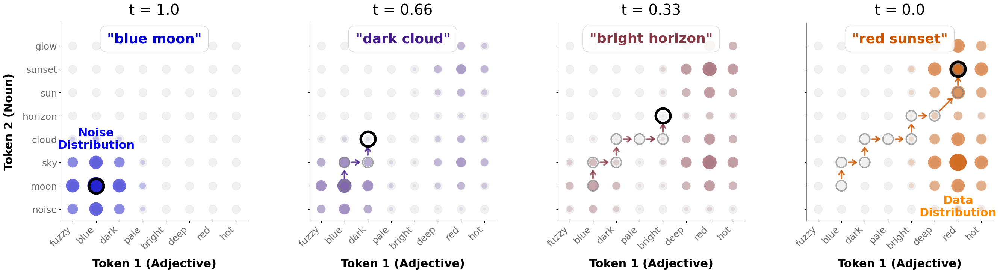
并行的代价：同一步里各位置互相看不见。网络对每个位置给出的是各自的边缘分布，同一步里各位置独立抽样。于是第 \(i\) 个位置抽样时，能看到整张当前画布 \(x_t\)，却看不到其他位置在这一步同时抽到了什么。举个例子：“你好”和“您好”都合理，如果第一个位置抽到“您”、第二个位置独立地抽到“们”，就可能拼出“您们”这样的不通顺组合。报告说下一节的两个设计就是为了对付这个问题：自条件让模型看到自己上一步的完整预测，熵界采样只在各位置都很确定时才一次接受很多个。
3 架构与推理：一套权重，既当因果编码器，又当双向解码器
Transformer 每一层的注意力，要拿当前位置的 query 去和所有可见位置的 key、value 做运算。AR 模型生成时，前面 token 的 key 和 value 算过一次就不会再变，所以存下来复用，这就是 KV 缓存。普通的掩码扩散模型（如 LLaDA）对整段回答做双向注意力，任何一个位置变了，所有位置的 key、value 都跟着变，缓存就失效了，只能每一步把整段重算一遍。
块扩散（BD3-LM）的折中是：把回答切成若干块，块与块之间按从左到右的顺序生成，块内部做扩散。已经写完的块从此不再改动，它们的 key、value 就可以缓存；正在写的块只在块内双向注意，并读取前面块的缓存。Fast-dLLM v2、SDAR、LLaDA2.0 都走这条路，并且都是从 AR 模型改造而来。DiffusionGemma 的“画布”就是这里的“块”，长度 256。
报告把 DiffusionGemma 描述为一个共享权重的编码器-解码器 Transformer：编码器和解码器是同一套 Gemma 4 权重 \(\theta\)，区别只在注意力掩码。作者明确说，绑定在现成 AR 骨架上是一个务实的选择：用一部分绝对质量换取训练成本的大幅下降，同时继承 Gemma 4 的长上下文和多模态能力，而且最终的权重还能直接拿来做 AR 生成（§3.5）。
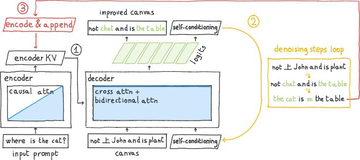
3.1 块自回归：一次一块画布，画布之间走 KV 缓存
具体流程是这样的。第一步，把上下文 \(h\)（系统指令、用户输入，以及多模态时交错插入的图像嵌入）用因果编码器编码成 KV 缓存：
第二步，从一张完全随机的画布开始（每个位置都是从词表均匀抽出的 token），在解码器里反复去噪；解码器通过交叉注意力读 \(H\)，所以生成能以系统指令、用户输入和之前写好的回答为条件。第三步，画布去噪完成（走满步数，或被 §3.3 的自适应停止提前叫停）后，把得到的干净画布 \(\hat x_0\) 再过一次因果编码器，把它的 key、value 追加到缓存里：
然后开始下一块画布，直到模型写出表示“本轮结束”的特殊 token，最后把所有画布拼起来就是回答。
和 BART、T5 正好反过来。经典的编码器-解码器模型（BART、T5）用双向编码器读上下文、用因果解码器逐字生成；DiffusionGemma 反过来，用因果编码器处理历史、用双向解码器做画布去噪。之所以让编码器保持因果，是因为这样每写完一块画布，只需把这一块追加进缓存，前面的缓存原封不动；如果编码器是双向的，早先的上下文 token 会“看见”新画布，它们的 key、value 就会变，整个上下文都得重新编码。代价是早先的上下文看不到后来写的内容，但这正好和 AR 模型的情况一样，也正是 Gemma 4 的权重原本习惯的方式。作者认为这让方法能扩展到很长的推理链。
谁先提出的。报告说这种块自回归方案是他们组在 2023 年 6 月的一份未发表手稿里提出的，与 Fast-dLLM v2（Wu et al., 2025）、BD3-LM（Arriola et al., 2025）以及 Deschenaux 与 Gulcehre（2026）的块状建模和 KV 缓存方案是各自独立得出的。未发表手稿无法核实，读者只需知道这几条工作在结构上属于同一类。
3.2 一次去噪迭代里发生了什么
普通的去噪迭代里，模型每一步只看到当前的带噪画布，上一步自己算出的完整概率分布被“抽样”这个动作扔掉了，只剩下抽中的那个 token。自条件（最早见于连续扩散的 Analog Bits 等工作）把上一步的预测作为额外输入喂回模型：模型能看到“我上一步认为每个位置大概是什么、有多确定”，这样同一步里各位置抽样时，至少都能参考一份共同的、完整的上一步判断，减少前面说的“各抽各的、拼不起来”的问题。
设最大去噪步数为 \(N\)，步长 \(\Delta t=1/N\)，画布从 \(t=1\) 的随机 token 开始。每一步，解码器读三样东西：当前带噪画布 \(x_t\)、上下文缓存 \(H\)、以及一个连续的自条件信号 \(z_t\in\mathbb{R}^{C\times d}\)，输出每个位置在整个词表上的 logits：
接着做三件事：用温度 \(\tau_t\) 缩放 logits 后取 softmax，得到每个位置“干净 token 是什么”的概率 \(\hat p_0\)；把这些概率乘以词嵌入矩阵 \(E\)（相当于按概率对词向量做加权平均），再过一个小前馈网络，得到下一步的自条件信号；最后按 \(\mathrm{Step}\) 规则抽出新画布：
那个前馈网络就是表 1 里 7.8M 参数的“自条件模块”。第一步的 \(z\) 设为全零。
为什么选均匀噪声。报告明确写道，去噪迭代用的是多项式（均匀）扩散，而不是掩码扩散。理由是：在均匀噪声下，任何 token 都可以转移成任何别的 token，所以模型可以持续纠正自己的错误，当前画布里早先已经被接受的 token，后面的步骤里仍然可以被改掉。在常见的掩码扩散采样器里，一个位置一旦从 [MASK] 揭开就固定了，写错了也改不回来。但要注意，这种“可改”只在当前画布内部成立：已经提交的前几块画布是永久冻结的。
关于可解释性的一段旁注。自条件信号是一个连续向量，等于在 token 序列之外开了一条“隐藏通道”，这会不会让模型的推理更难被看懂？报告引用两篇分析（Asaria et al., 2026；Engels et al., 2026）说，这些中间的自条件向量可以稳定地映射回可解释的 token，所以透明度没有明显损失。后一篇是 Google DeepMind 自己的工作，下面“后来怎么样了”一节会简单介绍。
3.3 采样器：熵界接受、温度退火与自适应停止
上面的 \(\mathrm{Step}\) 只是一个通用框架。报告默认推荐的具体实现由三部分组成（原文算法 1），作者也强调模型并不绑定这一种采样器。
一个位置的预测分布的熵 \(e^i=-\sum_v \hat p_0^i(v)\log \hat p_0^i(v)\) 衡量它有多不确定：模型 100% 确定是某个词时熵为 0；在两个词之间五五开时熵约为 0.69（以自然对数计）。同时抽很多个位置之所以会出错，是因为这些位置之间可能有依赖（“你好”与“您好”的例子）。信息论给出一个简单的上界：若干位置之间总的依赖程度（它们各自的熵之和减去联合熵，叫总相关或多元互信息），不会超过“各自熵之和减去其中最大的那个熵”，因为联合熵至少不小于任何一个位置自己的熵。所以，如果一批位置的熵都很小，它们之间就不可能有多少依赖，独立地一起抽样也不会出大错。
这正是 EB-Sampler（Ben-Hamu et al.，原为掩码扩散设计，arXiv 2505.24857 ↗）的依据：每一步把位置按熵从小到大排好，在“熵之和减去最大熵”不超过预算的前提下，尽量多接受。下面的交互演示用一个城市名的玩具例子，展示阈值放宽后一次写更多位置、出错概率随之上升的关系（演示用的是置信度阈值，不是熵预算，但道理相同）。
第一部分：熵界接受。每一步先从温度缩放后的分布 \(\hat p_0\) 给所有位置各抽一个候选 token，再把位置按熵从小到大排序 \(e^{\pi_1}\le e^{\pi_2}\le\cdots\le e^{\pi_C}\)（熵相同按位置先后），取最大的 \(k\) 使得前 \(k-1\) 个熵之和不超过预算 \(b=0.1\)：
因为是从小到大排序，前 \(k\) 个里最大的熵就是第 \(k\) 个，所以“前 \(k-1\) 个之和”正好等于“前 \(k\) 个之和减去其中最大值”，也就是上面那个依赖程度的上界。排在前 \(k\) 位的位置接受刚抽出的候选 token；其余位置重新换成从词表均匀抽出的随机 token，留到下一步继续探索。注意 \(k\) 至少为 1（空和为 0），所以每一步至少有一个位置被接受。
这和 MaskGIT 的“按置信度从高到低揭开”很像，区别在于“揭开几个”不是固定的，而是由熵预算自动决定：画布里确定的位置多，一步就接受很多；不确定的位置多，就少接受几个。还有一个和掩码版 EB-Sampler 不同的地方值得说清楚：DiffusionGemma 每一步都对整张画布重新排序、重新挑选，上一步接受的 token 并没有被锁定，它们只是作为下一步的输入；如果下一步模型对某个已接受位置变得不确定，它就会落到预算之外，被重新随机化。这就是 §3.2 所说的“画布内可以改错”的实现方式。
第二部分：温度退火。抽样前，logits 要除以温度 \(\tau_t\lt 1\)，让分布更尖锐。温度随时间线性变化：
作者的说法是：噪声大的早期温度高一些，让模型探索不同的写法；结构逐渐成形后温度降低，果断地落定高置信度的内容。不过这里有一个从公式直接推出来的细节：\(t\) 是按“最大步数 \(N=48\)”匀速往下走的，而实际平均约 12 步就停了。到第 12 步时 \(t=1-11/48\approx 0.77\)，温度约为 0.71（推算）。也就是说，在默认设置下，大多数画布的温度只从 0.8 降到 0.7 左右，远没有降到 0.4。这也解释了原文图 9 的注释“\(N\) 越大，温度退火越温和”：\(N\) 越大，同样步数下 \(t\) 降得越慢。
第三部分：自适应停止。每一步都检查两个条件，同时满足就提前结束这块画布：一是预测足够确定，整张画布的平均熵低于 0.005；二是预测已经稳定，连续两步的 argmax 预测（每个位置概率最大的 token）完全相同。停止时返回 argmax 预测；如果走满 48 步还没停，也返回最后一步的 argmax。报告说，这样平均约 12 个有效去噪步就够了，而不是用满 48 步，在不损失质量的前提下把延迟降到约四分之一。
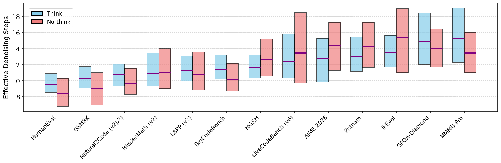
def denoise_canvas(H, N=48, b=0.1, e_stop=0.005, tmax=0.8, tmin=0.4, C=256):
x = uniform_random_tokens(C) # 画布从均匀随机 token 开始
z = zeros(C, d) # 自条件信号，第一步为 0
prev = None
for n in range(1, N + 1):
t = 1 - (n - 1) / N # t 只用来定温度
L = decoder(x, z, H) # 画布内双向注意力 + 对 H 交叉注意力，形状 C×V
argmax_pred = L.argmax(-1)
tau = (tmax - tmin) * t + tmin
p = softmax(L / tau)
e = entropy(p) # 每个位置一个熵
if n > 1 and e.mean() <= e_stop and argmax_pred == prev:
return argmax_pred # 自适应停止：够确定、且两步不变
prev = argmax_pred
if n < N:
z = ffw(p @ E) # 自条件：按概率加权的词向量
cand = sample(p) # 每个位置抽一个候选
order = argsort(e) # 熵从小到大（并列按位置）
k = largest m such that sum(e[order[:m-1]]) <= b
keep = order[:k]
x = uniform_random_tokens(C) # 未被接受的位置：重新随机
x[keep] = cand[keep] # 被接受的位置：用候选 token
return argmax_pred3.4 怎么数“快”：总 token、有效去噪步数与 TPF
因为有自适应停止，每块画布走几步变成了随机的，所以报告专门定义了几个效率指标。设一共生成了 \(K\) 块画布，第 \(k\) 块走了 \(N_k\le N\) 步，产出了 \(C_k\le C\) 个有效 token（整块 256 个，或者截到第一个结束符为止）：
每一步去噪的计算开销大致固定，所以总去噪步数基本决定了端到端延迟。“有效去噪步数”是按 token 数加权的平均步数：最后一块画布常常只写了一部分就遇到结束符，往往步数也少，如果简单平均会把指标拉低，所以按 token 加权。不用自适应停止时，它就等于 \(N\)。TPF 分母里的 \(K-1\) 是画布之间那一次额外的编码前向（把刚写完的画布追加进缓存）；读入提示词的那次编码不计入。
3.5 微调之后，仍然可以当自回归模型用
因为 DiffusionGemma 和 Gemma 4 的 Transformer 结构完全相同，微调后的权重可以原样装回 Gemma 4 的架构，用因果注意力一个一个 token 地生成，和原模型的用法一模一样。§7 的表 3 显示，这种“AR 模式”的分数正好落在扩散模式和原始 Gemma 4 之间。作者把这叫做双模式：可以按延迟要求和任务难度把请求分流到扩散模式或 AR 模式，也可以设计两种模式混合的解码方式。附录 A.2 还提到，DiffusionGemma 支持 TiDAR 那样“用扩散起草、用 AR 验证”的配置，但报告没有给出这种配置的实验数据。
- “因果编码器 + 双向解码器”并不是两个网络，而是同一套权重的两种注意力掩码。所以参数量没有翻倍，但每块画布要多付一次编码前向。
- “均匀噪声、可以改错”只在当前这块画布内部成立。一块画布一旦提交就永久冻结，前面画布里的错误后面改不了，这一点和 AR 模型一样。
- 熵预算 \(b=0.1\) 控制的是“一步之内同时落定的位置之间最多有多少依赖”的一个上界，不是错误率本身；上界成立的前提是模型给出的单个位置的分布本身是准的。
4 第一阶段 SFT：教会一个 AR 模型在画布上去噪
一条训练样本是“提示词 + 若干块回答画布”。生成时画布是一块块写的，但训练时所有画布的干净答案都已知，所以可以一次前向同时训练所有画布：对每块画布各自独立地加噪；干净的提示词和各块干净画布由因果编码器算出 key、value；每块带噪画布只在自己内部双向注意，并通过缓存看到提示词和它之前各块的干净内容，看不到别的带噪画布，也看不到后面的画布。这种注意力掩码在“带噪画布 × 带噪画布”那一部分是块对角的，所以报告称之为块对角注意力掩码。BD3-LM 把干净序列和带噪序列拼成两倍长度、用一张特制掩码一次算完，是同一个思路（见 BD3-LM 精读）。
加噪方式。用多项式（均匀）扩散：对每块画布，先均匀抽一个噪声水平 \(t\sim\mathrm{Unif}[0,1]\)，再让画布里每个 token 以概率 \(t\) 被替换成一个从词表均匀抽出的 token。按 §2 的写法，这相当于 \(\kappa_t=1-t\) 的线性日程（推算）。
损失函数。给定干净上下文（提示词和之前的画布，经编码器写入缓存）\(H\)、自条件信号 \(z_t\) 和带噪画布 \(x_t\)，让模型在画布的每一个位置上预测原本的干净 token，最小化交叉熵：
这里有两点和掩码扩散（如 MDLM、LLaDA）的训练不同，值得说清楚原因。第一，损失算在全部 \(C\) 个位置上，而不只是被破坏的位置：在均匀噪声下，模型不知道哪些位置被换过，所以每个位置都要判断“这个字对不对、不对的话应该是什么”，没被换掉的位置也是有用的训练信号。第二，损失没有按噪声水平加权：掩码扩散通常用 \(1/t\) 这类权重，使损失成为对数似然的一个下界（ELBO）；这里是离散流匹配里常用的、不加权的去噪交叉熵。直接后果是，这个模型没有一个现成的似然或困惑度可报，报告的评测也全部是基于生成结果的基准分数。
训练进度。报告用原文图 6、图 7 展示 SFT 过程中下游分数的变化：微调开始前模型完全不会去噪（分数为 0）；开始后分数迅速上升，之后进入随训练量对数线性增长的阶段。非思考模式只需中等量的 SFT 就能达到不错的水平；思考模式起点更低，但斜率更陡，需要长时间的 SFT。原因是模型一开始很难维持连贯的推理链，经常陷入结巴（同一个词反复出现）或循环。
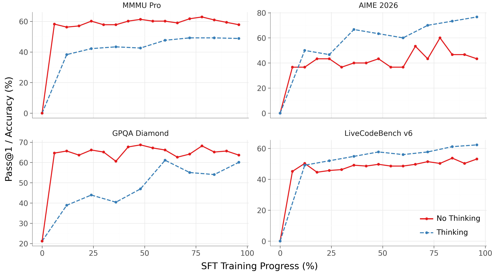
- 原文图 6 的分数是在最大 192 步下测的，远多于最终推荐的 48 步。下一节会看到，SFT 模型在 48 步时会崩，所以这张图说明的是“SFT 学会了去噪”，不是“SFT 模型可以快速生成”。
- 报告没有公开 SFT 用了什么数据、多少 token、训练多少步、用了什么硬件。摘要里“不到原模型训练 token 的 10%”是 SFT 与 SD·RL 两阶段的合计。局限一节又说 SFT “相对较短，受限于算力预算”，和本节“长时间的 SFT”并不矛盾：前者是和理想情况比，后者是和非思考模式所需的量比。
- §4 的公式里出现了自条件信号 \(z_t\)，但没有说训练时它从哪来。§8 的开源微调工具里是“一半样本用上一次前向算出的 \(z_t\)，一半置零”；主训练是否相同，报告没有说明。
5 第二阶段 SD·RL：一边做强化学习，一边把去噪步数压下来
强化学习（RL）：让模型自己生成回答，用奖励（例如答案是否正确、代码能否通过测试、是否遵循指令）给回答打分，再调整参数，让高分回答更可能出现。AR 模型上最常见的是 PPO、GRPO 一类策略梯度方法。扩散语言模型做 RL 的难点在于算不出一条回答的精确似然，本站的 d1、LLaDA 1.5、DiffuCoder 等页面讨论了各种近似办法。
采样器蒸馏：扩散模型步数越多质量越好，但越慢。蒸馏的思路是让一个用很多步生成的“老师”产出高质量结果，再训练“学生”用很少的步数得到同样的结果。图像领域有渐进式蒸馏、一致性模型；文本扩散里，Seed Diffusion 把“少走几步”直接当成在线学习的目标，dParallel、d3LLM 等工作专门训练模型在每步多定几个 token。
训练设置。数据沿用 Gemma 4 的 RL 配方所用的数据分布，覆盖思考与非思考两种模式，目标能力包括有用性、数学推理、代码和指令遵循。模型从 SFT 权重初始化，并兼任在线老师：用“最大步数很多、温度退火很温和”的采样器配置生成去噪轨迹，作为高质量的参照。SD·RL 的联合目标利用这些轨迹，在同一次梯度更新里同时做两件事：一是奖励最大化，和 AR 或扩散模型上的标准 RL 类似，提高绝对的回答质量；二是采样器蒸馏，把老师在多步下得到的高质量结果，压缩到学生的少步生成里。
训练动态与“隐式课程”。原文图 8 显示，SD·RL 训练中出现两个同时发生、互相促进的现象。第一，在线老师的平均奖励稳步上升，说明基本能力在提高。第二，借助自适应停止，在线老师达到这些奖励所需的有效去噪步数越来越少。作者给出的机制是：SD·RL 的目标会系统性地降低模型的预测熵；熵降低后，自适应停止（平均熵低于 0.005 且两步不变）更早触发；于是老师生成的轨迹更短，训练数据的分布自动移向越来越短的去噪轨迹，相当于算法自己安排了一个由易到难的“课程”，自己控制蒸馏的节奏。由此还有一个和 AR 模型 RL 不同的现象：奖励指标进入平台期之后，继续做 SD·RL 仍然有好处，因为熵还在下降，会直接换来更快的推理。
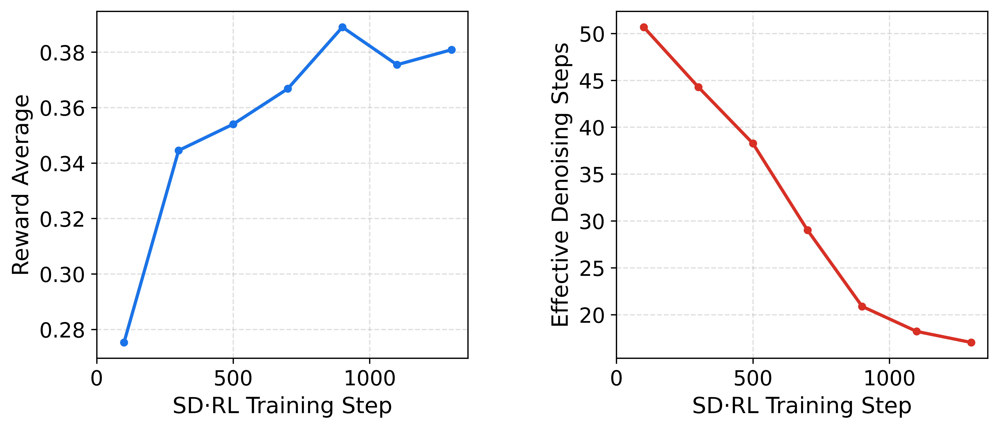
质量—速度前沿的移动。原文图 9 把 SD·RL 前后放在同一组坐标里比较。报告的结论是：质量上，GPQA-Diamond 和 LiveCodeBench-v6 的综合分提高约 10 分；效率上，TPF 从约 5 提高到接近 20。
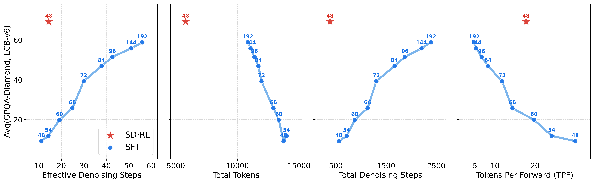
为什么 SFT 模型在 48 步下会崩，而且看起来还“很快”。原因在于重复循环：步数受限时，SFT 模型经常陷入反复输出同一个 token 的循环；一旦陷入循环，模型对这些重复 token 非常“确定”，预测熵骤降，于是自适应停止被过早触发。结果就是步数很少、TPF 很高，但输出是垃圾，而且因为循环一直写到长度上限，总 token 数反而最多。附录 B 给了两个 GPQA-Diamond 的例子：一道遗传学题，SFT 模型前面的推理是对的，写着写着变成一串重复的数字“1”，直到用完 token 预算，最终回答为空；一道二维谐振子的量子力学题，SFT 模型的推导也是对的，最后陷入不停输出右括号的循环。SD·RL 之后两题都干净地答出了正确选项 (B)。这个例子说明，只看 TPF 或步数而不看质量，会把“崩溃”误读成“加速”。
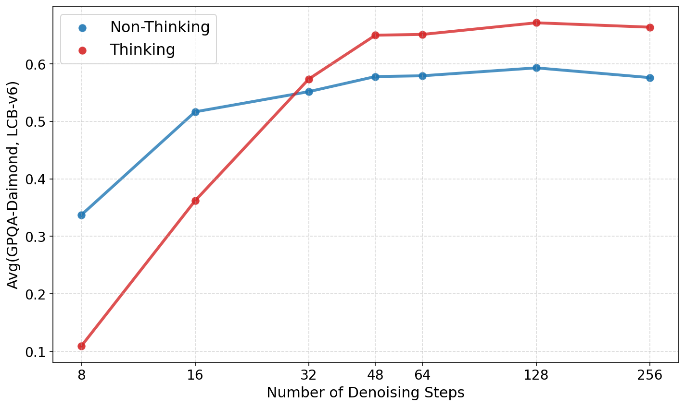
SD·RL 让模型专门适应少步区间。对 SFT 模型来说，下游表现随最大步数一直改善到 192 步，这时 256 个位置大约每步只定一两个，作者说此时的去噪“大致相当于任意顺序的自回归”。SD·RL 之后，表现随步数改善得更快，也更早饱和：48 步以内稳步提高，48 步之后收益递减（原文图 10）。作者的解释是，SD·RL 通过大力压低预测熵，把模型专门优化到了少步区间。
意外的副产品：回答变短了。SD·RL 还让模型的输出变得简洁、省 token。这和 AR 模型上的 RL 正好相反，后者常常通过拉长推理链来提高奖励。最终检查点的输出长度约为 SFT 检查点的一半（原文图 9 第二张小图）。作者坦言，这意味着模型放弃了一部分“想得更久、答得更好”的收益，但它对速度是一个乘数：每块画布的步数更少，加上总 token 数更少，端到端延迟极低。报告称，在整套评测上，DiffusionGemma 用的总前向次数不到 Gemma 4 AR 基线的 5%。用表 3 的数字核对：DiffusionGemma 平均写 4,001 个 token、TPF 19.74，约 203 次前向；Gemma 4 平均写 7,207 个 token，不带 MTP 时就是 7,207 次前向，比例约 2.8%（推算）。
- SD·RL 是这份报告方法上最核心的部分，但它的目标函数没有以公式形式公开：两项怎么组合、蒸馏损失具体是什么、奖励来自哪些模型或验证器、老师用几步和什么温度、训练了多少样本，报告都没有写。原文图 8 的横轴只到约 1,300 步，每步的批大小也未给出。所以外部无法复现这一阶段，只能使用它的结果（权重）。
- “+10 分、TPF 5 → 接近 20”是在 GPQA-Diamond 和 LiveCodeBench-v6 两项上测的，这两项也正是原文图 1 头条图使用的两项。其他基准上 SD·RL 前后的变化，报告没有给出。
- “回答变短”同时解释了一部分速度优势和一部分质量损失。§7 的表 3 里，DiffusionGemma 平均输出 4,001 个 token，原始 Gemma 4 是 7,207 个；在需要长推理的 AIME 上差距最大。
6 推理优化：每一步贵多少，并发高了会怎样
一次计算花的时间，大致取决于两个下限中较大的那个：把数据从显存搬到计算单元的时间（数据量 ÷ 带宽），和把乘加做完的时间（计算量 ÷ 算力）。每搬 1 字节数据能做多少次运算，叫算术强度。AR 解码在批大小为 1 时，每个权重只用来算 1 个 token，算术强度极低，时间几乎全花在搬数据上，GPU 的算力大部分闲着。扩散的一步同时算 256 个位置，同一份权重被用了 256 次，算术强度高得多：搬数据的时间基本不变，多出来的计算原本就是闲置的算力，几乎“白拿”。但如果同时服务很多请求，AR 也可以靠拼批把算术强度提上去；而扩散模型每个 token 实际要被处理很多次（每块画布走十几步），一旦算力被占满，这些重复的计算就不再白拿。下面的小工具可以拖动批大小，看解码点在屋顶线上从左（访存受限）往右（算力受限）移动。
6.1 一个公式：速度比 = TPF ÷ 单步变慢的倍数
报告用一个很简单的关系概括扩散相对 AR 的吞吐优势：每一步去噪产出 TPF 个 token，所以总前向次数是 AR 的 1/TPF；但每一步要处理 256 个位置，比 AR 的一步慢 \(r\) 倍；所以相对 AR 的吞吐比约为 \(\mathrm{TPF}/r\)。提高 TPF 靠训练（§4、§5），降低 \(r\) 靠硬件层面的优化，这一节讲后者。报告把分析限定在批大小为 1、只服务一个请求的场景，对照对象是同一个模型的 AR 版本 Gemma 4 26B A4B。参考推理实现有 Hugging Face Transformers 和 vLLM 两个版本。
6.2 单步时间拆解：慢在 MoE、采样和注意力
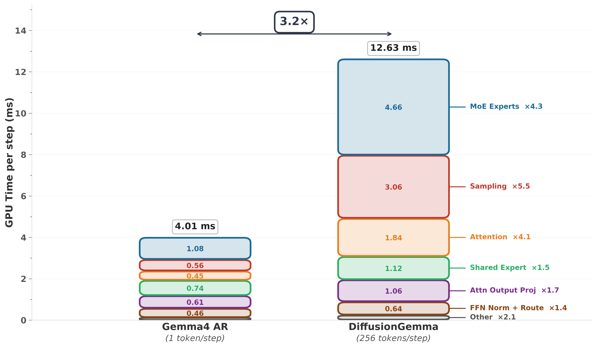
报告专门看 GPU 内核时间而不是端到端延迟，是为了把模型本身的瓶颈和服务框架的开销分开。端到端延迟比 GPU 时间多出约 1 ms，来自反分词等 CPU 侧的服务开销，两个模型差不多。三个主要的变慢来源分别是这样形成的：
- MoE 专家层。单个请求时，MoE 层的时间主要花在从显存读专家权重上。AR 的一步只有 1 个 token，每层只激活 8 个专家；DiffusionGemma 的一步有 256 个 token，在 PG-19 数据上测得每层平均激活约 84 个不同的专家，要读的专家权重多了十倍左右，所以 MoE 内核慢了 4.3 倍。作者指出这和投机解码验证时付出的代价是同一类，只是并行的 token 更多；如果是稠密模型，就不存在“激活更多专家”的问题，前馈层的变慢会小于 2 倍。顺带可以看出画布内 token 的路由高度相关：如果 256 个 token 各自独立地从 128 个专家里随机挑 8 个，几乎每个专家都会被挑到（期望约 128 个，推算），实测只有约 84 个。
- 采样。AR 的采样只是对一个位置做 softmax 并抽样；扩散的采样要对整块画布的 256 个位置、26.2 万词表做 softmax，还要做自条件需要的“概率 × 嵌入矩阵”乘法，而且这些都用全精度计算。仅那次矩阵乘法就约有 \(2\times256\times262{,}144\times2{,}816\approx3.8\times10^{11}\) 次浮点运算（推算，按模型卡的隐藏维度 2,816）。所以扩散采样要 3.06 ms，AR 只要 0.56 ms。报告说，采样部分有意用标准 PyTorch 原语加
torch.compile实现，而不是手写 GPU 内核，以便社区修改和扩展，这也意味着这里还有优化余地。 - 注意力。DiffusionGemma 在 256 个位置的画布上做双向注意力，用不了 AR 专用的单 token 解码注意力内核，只能用 FlashAttention-4 这类为整块计算优化的内核；即便如此，注意力仍比 AR 慢约 4 倍。
消除 CPU 与 GPU 的同步。服务 DiffusionGemma 还有额外的复杂性：去噪步数取决于自适应停止，是运行时才知道的；而且有两种前向（去噪步和更新 KV 缓存的编码步），注意力掩码不同，还可能出现在同一个批里。如果每次都要 CPU 来判断“这个请求停了没有、下一步用哪种掩码”，CPU 和 GPU 之间的来回同步会显著增加延迟。报告说他们把异步调度扩展到文本扩散模型，并给每条序列加了一个“是否用因果注意力”的标志，让这些判断全部在 GPU 上完成，细节见 vLLM 的实现。
6.3 单个请求：每秒约 1,456 个 token
扩散模型的解码吞吐按下式计算：
其中 \(t_{\mathrm{fwd}}\) 是一步去噪的时间，它随上下文长度变化（因为注意力要读整个上下文）。在 H100、FP8、单个请求、输入 4,096、输出 1,024 的条件下，一步去噪端到端平均 13.56 ms（GPU 时间 12.63 ms）。代入七项基准的平均 TPF 19.74，得到 1,456 token/秒，是同一设备上 Gemma 4 AR（204 token/秒）的 7.1 倍、带 MTP 的 Gemma 4（303 token/秒）的 4.8 倍。顺带可以反推 \(r\)：AR 一步约 1/204 秒 ≈ 4.9 ms，所以端到端的 \(r\approx13.56/4.9\approx2.8\)，\(\mathrm{TPF}/r\approx7.1\)，和报告一致（推算）。
这里的 1,456 是用公式算出来的，§7 表 3 里的 1,479 是在七个基准上实测的平均，两个数字来源不同。也正因为 \(t_{\mathrm{fwd}}\) 随上下文变化，不能简单地用 TPF 除以 13.56 ms 去推每个任务的速度：例如 AIME（思考模式）TPF 19.3，按 13.56 ms 算应为约 1,423 token/秒，实测 1,365；GSM8K TPF 23.2，按公式约 1,711，实测 1,866（推算）。长推理任务上下文更长、每步更慢，短任务则更快。
6.4 多个请求：约 32 个并发后，AR 的总吞吐反超
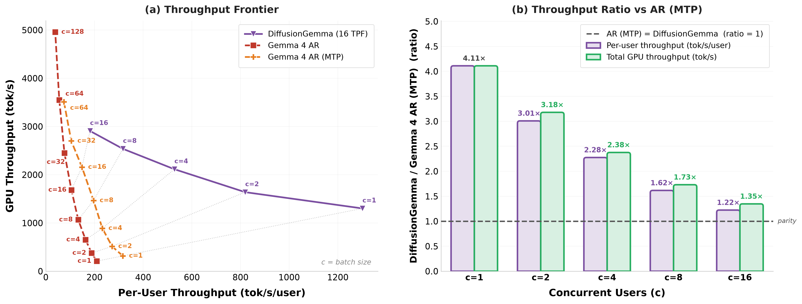
报告的原话是：低并发时，DiffusionGemma 的每用户速度和总吞吐都更高；到中等并发（约 32 个并发请求）时，AR 模型开始有吞吐优势。报告同时强调，这些结果没有针对大于 1 的批大小做专门优化：当前的内核选择不是最优的，采样也没有调到能随批大小扩展，例如对采样步做 top-\(k\) 截断，预计能在大批量时明显提高吞吐、对质量影响可以忽略。
为什么并发一高，优势就消失。关键在于“每产出一个 token，要处理多少个位置”。AR 每产出 1 个 token 处理 1 个位置。DiffusionGemma 每块画布 256 个位置要被处理十几遍，平均每产出 1 个 token 要处理约 256 ÷ 19.74 ≈ 13 个位置（推算）。单个请求时这些额外计算用的是本来闲置的算力，所以不要紧；并发多了，AR 靠拼批也能把算力用起来，扩散模型多出来的约 13 倍计算就成了真正的成本。
面向真实流量。报告最后指出，和 AR 相比，DiffusionGemma 改变了两类层的计算特性：注意力层读 KV 缓存的次数少了 TPF 倍（因为每次前向产出约 20 个 token，而不是 1 个）；MoE 层则做了更多的计算，与有效去噪步数成正比。现代推理服务的一个难题是：长上下文时注意力受访存限制，拖累了前馈层和 MoE 层的算力利用率，智能体类长上下文工作流尤其如此；DiffusionGemma 用计算换数据搬运，在“算力与带宽之比”逐代增长的 GPU 上是有利的方向。但作者也明确说，真实流量下的系统性实证分析不在本文范围内。Google 的发布博客说得更直接：在高 QPS 的云服务里，AR 模型可以把算力用满，DiffusionGemma 的并行解码收益递减，甚至可能带来更高的服务成本；它的优势在单张加速卡、低到中等批大小的场景。
- 原文图 12 里的 DiffusionGemma 标注为“16 TPF”，而不是表 3 的 19.74，数据集是 PG-19 而不是七项基准；报告没有说明 16 TPF 是实测值还是设定值。
- 图中 DiffusionGemma 只测到 c=16，“约 32 个并发后反超”是从 c=1 到 16 的倍数趋势得出的，c=32 本身没有扩散模型的数据点。
- “反超”指同一并发下的比较。若问“一张卡最多能产出多少 token”，AR 在 c=128 时约 4,950 token/秒，远高于图中 DiffusionGemma 的最高点约 2,900（读自原图）。对按 token 计费、追求单卡总吞吐的云服务商，这一点比低并发时的倍数更重要。
- 表 3 的全部速度数字都是批大小 1。它们回答的是“单个用户最快能多快”，不是“服务成本是多少”。
7 实验结果：分数掉了多少，速度快了多少，以及这些数字的份量
7.1 实验是怎么设计的
四种运行模式。DiffusionGemma 可以用文本扩散（TD）或自回归（AR）两种方式生成，每种又分开启和关闭“思考”两种，共四种模式；不特别说明时，指的是 TD 加思考模式。
对照对象。一是它的 AR 起点 Gemma 4 26B A4B（表里列的是带 MTP 的版本；MTP 属于投机解码，原理上不改变输出分布，所以分数可以看作 Gemma 4 本身的分数，与模型卡给出的 Gemma 4 分数一致）。二是两个同期的开放权重文本扩散模型：LLaDA 2.1 Flash 100B（用它的速度优先模式“S Mode”，本站另有 LLaDA2.1 精读）和 Nemotron Diffusion 14B（用它的扩散模式，见 Nemotron-Labs-Diffusion 精读）。三是只能通过 API 使用的闭源扩散模型 Mercury 2（“high”和“medium”两档推理强度）。
数学推理：AIME 2026（美国数学邀请赛题）、GSM8K（小学应用题）、MGSM（GSM8K 的多语言版）、Putnam（大学数学竞赛题）、HiddenMath（Google 内部数学集）。代码：LiveCodeBench-v6（定期更新的竞赛编程题，降低训练数据污染）、Codeforces（按 Elo 分计）、HumanEval、BigCodeBench、LBPP v2、Natural2Code（Google 内部代码集）。知识与综合推理：GPQA-Diamond（研究生水平的科学选择题）、BIG-Bench Extra Hard、MMMLU（多语言 MMLU）、MMLU-Pro。多模态：MMMU-Pro。指令遵循：IFEval。智能体：τ2-bench 的零售、航空、电信三个环境。HiddenMath 和 Natural2Code 是 Google 自有、未公开的评测集，报告特意标出它们“未泄露”，也就是不可能出现在别人的训练数据里，但外部也无法复现。
测速条件。TPS 不含读入提示词（prefill）的时间。DiffusionGemma 和 Gemma 4 在 1 张 H100 上用 FP8、批大小 1；Nemotron 14B 在 1 张 H100 上用 BF16、批大小 1；LLaDA 2.1 Flash 在 8 张 B200 上用 BF16、批大小 1；Mercury 2 通过公开 API 估计（附录 E，见 §11）。TPS、TPF 和平均总 token 数取 7 个所有模型都有结果的基准的平均：AIME 2026、GPQA-Diamond、LiveCodeBench-v6、MGSM、HumanEval、LBPP、Natural2Code。Gemma 4（MTP）的 TPS 和 TPF 是在投机解码专用的 SPEED-Bench 上测的。报告脚注还说明，Nemotron 和 LLaDA 没有 FP8 的数字，FP8 的加速上限是 2 倍，典型值更接近 1.5 倍。
7.2 主要结果
下表摘录原文表 3 的主要行（完整表格共 20 个基准、10 列）。
| 基准 | DG 扩散·思考 | DG 扩散·不思考 | DG 的 AR 模式·思考 | Gemma 4（MTP）·思考 | LLaDA 2.1 Flash（S） | Nemotron 14B | Mercury 2 High |
|---|---|---|---|---|---|---|---|
| AIME 2026 | 69.1 | 50.8 | 84.2 | 88.3 | 80.0 | 40.0 | 91.7 |
| GPQA-Diamond | 73.2 | 64.6 | 79.8 | 82.3 | 68.7 | 47.0 | 75.2 |
| LiveCodeBench-v6 | 69.1 | 60.6 | 71.4 | 77.1 | 39.4 | 28.6 | 79.4 |
| Codeforces Elo | 1429 | 959 | 1569 | 1718 | 718 | – | 1986 |
| BIG-Bench Extra Hard | 47.6 | 40.0 | 59.1 | 64.8 | – | – | 48.9 |
| GSM8K | 96.3 | 95.8 | 96.6 | 96.7 | 45.0 | – | 96.5 |
| MMMU-Pro | 54.3 | 66.0 | 63.3 | 73.8 | – | – | – |
| HumanEval | 94.5 | 92.7 | 98.2 | 98.8 | 90.2 | 86.0 | 98.2 |
| IFEval | 97.4 | 94.5 | 97.2 | 98.7 | – | 72.1 | 97.0 |
| τ2 零售 / 航空 / 电信 | 71.5 / 69.0 / 28.1 | 57.5 / 49.0 / 32.0 | 75.4 / 72.0 / 33.8 | 85.5 / 76.0 / 43.0 | – | – | – |
| Natural2Code（内部） | 94.0 | 90.1 | 96.2 | 96.3 | 86.9 | 73.3 | 79.1 |
| 输出速度（token/秒） | 1479 | 1512 | 204 | 303 | 375 | 49 | 600 |
| TPF | 19.74 | 18.76 | 1.00 | 1.40 | 4.63 | 1.79 | – |
| 平均总 token 数 | 4,001 | 829 | 5,184 | 7,207 | 4,371 | 941 | 3,882 |
“–”表示报告没有该项数据。DG = DiffusionGemma。速度、TPF、总 token 为 7 项基准平均；Mercury 2 的速度为 API 黑盒估计。
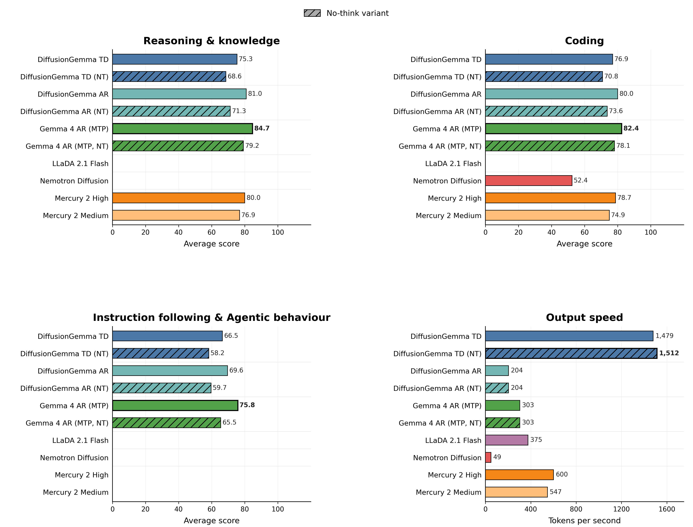
和开源扩散模型比。报告说 DiffusionGemma 在质量上明显超过现有的开放权重扩散模型，同时 TPF 高了约一个数量级：19.74 对 LLaDA 2.1 Flash 的 4.63 和 Nemotron 的 1.79，分别约 4.3 倍和 11 倍（推算）。逐项看，DiffusionGemma 在大多数基准上领先，例外是 AIME 2026，LLaDA 2.1 Flash 得 80.0，高于 DiffusionGemma 的 69.1。
和 Mercury 2 比。报告说质量上“很有竞争力”，速度约为 Mercury 2 的 2.5 倍（1,479 对 600）。
和自己的 AR 起点比。扩散模式在三类能力上都有损失，换来的是约 5 倍于带 MTP 的 Gemma 4 的输出速度（1,479 对 303）。把同一套权重放回 AR 模式运行，可以收回一部分差距，但速度回到 204 token/秒。作者认为这种双模式可以按延迟要求和任务难度动态分流请求。
效率表（原文表 4）。表 4 列出 DiffusionGemma 扩散模式在 15 个基准上思考与不思考两种模式的分数、TPF、TPS、有效去噪步数、总前向次数、总 token 数和端到端时间（不含 prefill，按样本平均）。几个值得注意的规律：思考模式下各任务的 TPF 在 15 到 23 之间，TPS 在约 950 到 1,870 之间；GSM8K、HumanEval 这类短而结构化的任务 TPF 最高（约 23），有效步数最少（约 9）；Codeforces 输出最长（平均 11,622 个 token），上下文越写越长，每步越慢，TPS 只有约 950，单个样本平均要 12.2 秒。一个反常值是 IFEval 不思考模式：TPF 只有 9.0、TPS 只有 732。这类回答平均只有 239 个 token，不到一块画布，本站的解释是：一块 256 位置的画布不论有效 token 多少都要去噪到收敛，结束符之后的位置也要定下来，短回答摊不开这部分开销。表 4 还显示 MMMU-Pro 思考模式 54.3 分低于不思考模式的 66.0，原因见 §10。
一个小的不一致。用表 4 中 7 项基准思考模式的 TPS 直接平均，得到约 1,487 token/秒，与表 3 的 1,479 略有出入（推算）；同样算法得到的 TPF（19.73）、总 token（4,001）和不思考模式的数字则与表 3 吻合。差别不到 1%，不影响结论，报告没有解释。
7.3 结果的份量
先把同一个模型在不同地方出现过的速度数字放在一起，因为它们经常被混着引用：
| 数字 | 出处 | 条件 |
|---|---|---|
| 1,479 token/秒 | 报告表 3 | 1 × H100，FP8，批大小 1，思考模式，7 项基准实测平均，不含 prefill |
| 1,512 token/秒 | 报告表 3 | 同上，不思考模式 |
| 1,456 token/秒 | 报告 §6 公式 | 单步 13.56 ms（PG-19，输入 4,096、输出 1,024）× 平均 TPF 19.74 推得 |
| 约 1,240 token/秒 | 报告图 1 | 只取 GPQA-Diamond 与 LiveCodeBench-v6 两项 |
| 约 1,300 token/秒 | 报告图 12，c=1 | PG-19，图例标注 16 TPF（读自原图） |
| 约 1,500 token/秒 | 报告摘要 | 7 项平均的取整说法 |
| 1,000+（H100）、700+（RTX 5090） | Google 发布博客（2026-06-10） | 未给出条件；博客标题称“最高快 4 倍” |
| 超过 1,100 token/秒、15–20 TPF | Hugging Face 模型卡 | H100，FP8，低批大小 |
| 最高约 2,000 token/秒 | 报告转述 Unsloth | RTX 6000，其余条件报告未给 |
| 1,479 token/秒 | Gemini Diffusion 模型页（另一个模型） | “不含开销的平均采样速度”，开销 0.84 秒，硬件未披露；与 DiffusionGemma 数值相同只是巧合，二者不可比 |
再看每一组比较到底匹配了什么：
| 比较 | 模型与数据 | 硬件与精度 | 批大小 | 测速用的题 | 谁测的 |
|---|---|---|---|---|---|
| DG 对 Gemma 4 AR | 同一个模型；DG 多训了 SFT + SD·RL（合计不到原训练量 10%） | 相同：1 × H100，FP8 | 1 | 相同的 7 项 | 报告作者 |
| DG 对 Gemma 4 + MTP | 同上 | 相同 | 1 | DG 用 7 项；MTP 的 TPS、TPF 用 SPEED-Bench | 报告作者 |
| DG 对 LLaDA 2.1 Flash | 不同模型（总参数 100B），不同数据 | DG 1 × H100 FP8；对方 8 × B200 BF16 | 1 | 相同的 7 项；分数由报告作者测 | 报告作者 |
| DG 对 Nemotron 14B | 不同模型，不同数据 | DG FP8；对方 BF16，同为 1 × H100 | 1 | 同上 | 报告作者 |
| DG 对 Mercury 2 | Mercury 2 参数量、数据、架构都未公开 | DG 本地 H100；Mercury 2 是公开 API，硬件未知 | DG 为 1；API 端未知 | 7 项，用回归模型从 API 计时反推 | 报告作者（黑盒估计） |
在这两张表的基础上，可以这样评估报告的结论：
- 和自己的 AR 起点比，是这份报告里最干净的一组比较。参数完全相同、起点权重相同、硬件精度和批大小相同，质量的损失（例如 AIME 2026 从 88.3 降到 69.1，GPQA-Diamond 从 82.3 降到 73.2）可以比较可信地归因于“改成扩散 + 少步化”。不过 DiffusionGemma 多做了一轮包含 RL 的后训练，所以这不是一个“只改生成方式、其他都不变”的对照；AR 模式的分数（AIME 84.2）说明这轮训练本身也让权重偏离了原模型。
- “比最先进的投机解码还快”只在 Gemma 4 自带的 MTP 上得到了验证。表 3 里 MTP 的 TPF 只有 1.40（图 12 注明草稿长度为 4），而且它的速度是在另一套题（SPEED-Bench）上测的。用这两个数推出的单步时间（1.40 ÷ 303 ≈ 4.6 ms）甚至比不带 MTP 的 AR 单步（约 4.9 ms）还短（推算），说明两组数字的测量条件并不一致，不宜互相推导。引言引用的 3–6 TPF 那一档投机解码方法（如 EAGLE-3），报告没有在 Gemma 4 上实测。
- 速度优势里有一部分来自“写得少”。DiffusionGemma 平均输出 4,001 个 token，Gemma 4 是 7,207 个。TPS 只衡量“写得多快”，不衡量“要写多少”。按平均值粗算，单个样本的解码时间约为 4,001 ÷ 1,479 ≈ 2.7 秒对 7,207 ÷ 303 ≈ 23.8 秒（推算，不含 prefill，平均值相除只是近似），用户感受到的端到端差距比 TPS 的 4.9 倍更大；但这部分差距和质量损失是同一件事的两面：思考变短，在 AIME 这类需要长推理的任务上掉分最多。
- 所有速度数字都是批大小 1。这是扩散模型最有利的场景，报告也明确这样限定。原文图 12 显示优势随并发下降，DiffusionGemma 只测到 16 个并发，约 32 个并发后 AR 反超是按趋势得出的；按单卡最大总吞吐，AR 远高于扩散模式。这些数字适合回答“本地或单用户能有多快”，不适合回答“服务成本是多少”。
- 和其他开源扩散模型的速度比较，硬件和精度都不同。DiffusionGemma 用 FP8，两个对手用 BF16；按报告自己的脚注，FP8 最多能带来 2 倍加速。即使把 Nemotron 的 49 和 LLaDA 2.1 Flash 的 375 都乘以 2（分别约 98 和 750，推算的上限），也远低于 1,479，所以“快得多”这个结论站得住，但具体倍数不是同条件的。
- 对手的分数由报告作者自己测，个别数字明显异常。LLaDA 2.1 Flash 的 GSM8K 只有 45.0、MGSM 只有 6.8，而它的 HumanEval 有 90.2，这种落差更像是提示格式或答案提取不匹配，而不是模型真的不会小学数学（本站推测）。好在头条图用的两项与 LLaDA2.1 论文自报的 S 模式分数接近（GPQA 66.67、LiveCodeBench 44.05，对报告测得的 68.7、39.4），所以原文图 1 的相对位置大致可信。
- 和 Mercury 2 的比较，速度来自黑盒估计，质量上 Mercury 2 其实多数领先。Mercury 2 的 600 token/秒是从 OpenRouter 公开 API 的计时用回归反推的，包含网络与共享服务的影响，而 DiffusionGemma 是本地独占一张卡。Inception 自报约 1,000 token/秒（Blackwell GPU），独立测速机构 Artificial Analysis 报告的中位数约 987（硬件未披露）；若用 987，DiffusionGemma 的倍数约为 1.5 倍而不是 2.5 倍（推算）。质量上，除了 IFEval（97.4 对 97.0）和 MMLU-Pro（同为 77.6），Mercury 2 High 在其余有数据的公开基准上都高于 DiffusionGemma，差距较大的有 AIME（91.7 对 69.1）、LiveCodeBench（79.4 对 69.1）和 Codeforces（1986 对 1429）；代码类平均分里 Mercury 2 之所以只比 DiffusionGemma 高 1.8 分，是因为包含了 Google 内部的 Natural2Code（Mercury 2 只有 79.1）；去掉这一项，四项公开代码基准的平均约为 78.6 对 72.7（推算）。“质量很有竞争力”是公允的说法，“质量相当”则不是。
- 两个内部基准无法外部复现。HiddenMath 和 Natural2Code 不受训练数据污染，这是优点；但只有 Google 能跑，而且恰好是 DiffusionGemma 相对 Mercury 2 优势最大的一项（Natural2Code 94.0 对 79.1）。
- 步数与采样设置。表 3、表 4 的扩散模式分数都用默认采样器：画布 256、最多 48 步、熵预算 0.1、温度 0.8 → 0.4、自适应停止，实际有效步数按任务约 7.5 到 18.5 步（表 4）；默认开启思考。报告没有写表 3 用了几个随机种子，也没有写质量评测时用的是 FP8 还是更高精度。
- 独立测量几乎没有。报告里 DiffusionGemma 自己的全部质量和速度数字都由作者测得；唯一的第三方速度数字是转述 Unsloth 的“最高约 2,000 token/秒”，没有条件。好在权重、Transformers 与 vLLM 的实现都公开，任何人都可以在同样条件下复测，这一点和只有 API 的 Mercury 根本不同。截至 2026-10-20，本站没有找到在相同条件下独立复现 1,479 token/秒的公开报告。
- 没有公开的部分。SFT 与 SD·RL 的数据组成和 token 数（只给了“不到 10%”）、训练算力与硬件、SD·RL 的目标函数与奖励、老师的步数与温度、表 3 的随机种子数、AR 基线所用的推理引擎。
8 开源微调：数独与 PubMedQA
LoRA（低秩适配）不改动原模型的大矩阵 \(W\)，而是给它加一个低秩的增量 \(W+BA\)，其中 \(B\)、\(A\) 是两个又瘦又长的小矩阵，秩 \(r\) 很小（如 4 或 8）。训练时只更新 \(A\) 和 \(B\)，要存的梯度和优化器状态少得多，所以能在显存有限的机器上微调大模型。秩越大，增量的表达能力越强，但要训练的参数也越多。
工具与目标函数。微调工具建立在 Google 开源的 JAX 研究工具箱 Hackable Diffusion 之上，提供 LoRA 配方。训练序列长度为 \(P+KC\)：\(P\) 个提示 token 加上 \(K\) 块、每块 \(C\) 个 token 的画布。损失由两部分相加：编码器部分对整条序列做普通的下一个 token 预测；解码器部分从 \(K\) 块画布里均匀抽一块，加噪后做去噪交叉熵，条件是这块画布之前的提示和画布的 KV 缓存；一半样本带上由前一次前向算出的自条件信号，另一半置零：
同时训练编码器损失的原因是：编码器就是因果模式下的同一套权重，它负责把提示和已写好的画布写进缓存，如果只训练解码器，编码出来的缓存质量可能退化。LoRA 加在所有线性层上（注意力投影、MLP 门控、MoE 路由器、自条件前馈块），用 2 张 A100 80GB 就能训练。
数独。数独是检验离散扩散的好题目，因为每个格子的取值同时受行、列、宫的约束，天然不是“从左到右”的问题。作者用 Kaggle 上的公开数独数据集微调：全参数微调在 4,096 道留出题上整题正确率超过 85%；LoRA 秩为 8 时（只训练约 800 万参数、2,000 步）正确率 84.40%，有效去噪步数 10.72；而未经微调的原模型正确率是 0%，有效步数 40.65。附录 C 的例子显示，原模型失败的一个直接原因是格式：题目要求“只输出解好的 9×9 网格”，它却在思考通道里反复尝试构造网格，最后没有给出回答。所以这 84% 里既有“学会解题”，也有“学会遵守输出格式”。
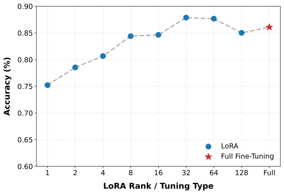
PubMedQA。为了说明不只限于结构化推理，作者还在生物医学问答 PubMedQA 上做了 LoRA（秩 4）微调：模型读一篇医学摘要，给出是 / 否 / 可能的判断和一段解释，评测只看长回答与参考解释的 BLEU。结果 BLEU 从 10.76 升到 20.67，判断准确率从 75.6% 小幅升到 76.62%；有效去噪步数则从 18.09 增加到 31.57，报告没有解释步数为什么变多。
9 文本扩散的其他好处：几个手挑的例子
双向推理与自我纠错。AR 模型写第 \(n\) 个 token 时只能看前文，看不到还没写的内容；扩散模型在一块画布内是双向注意的，后面的 token 可以影响前面的 token 怎么写，而且早先步骤里过早落定的 token 后面还能改。报告用一道算术题演示：题目是 \(7\times(\sqrt{111+10}-3)-9^2\)，并要求“先给答案再给推理”。Gemma 4 必须先写答案，于是第一个 token 就写下了错误的“−1”，接着一步步推理，算到 56 − 81 = −25 时才发现不对，只好追加一句更正。DiffusionGemma 的去噪轨迹（原文图 15）显示，它第一步也把最大概率给了“−1”，第二步变成“−15”，第三步就收敛到正确的“−25”，答案和推理在同一块画布里互相修正，5 步完成。附录 G.1 还有一个“青蛙过河”的陷阱题，Gemma 4 先答“能”再自相矛盾地说“不可能”，DiffusionGemma 初始也偏向“能”，几步后改成“不能”，6 步完成。
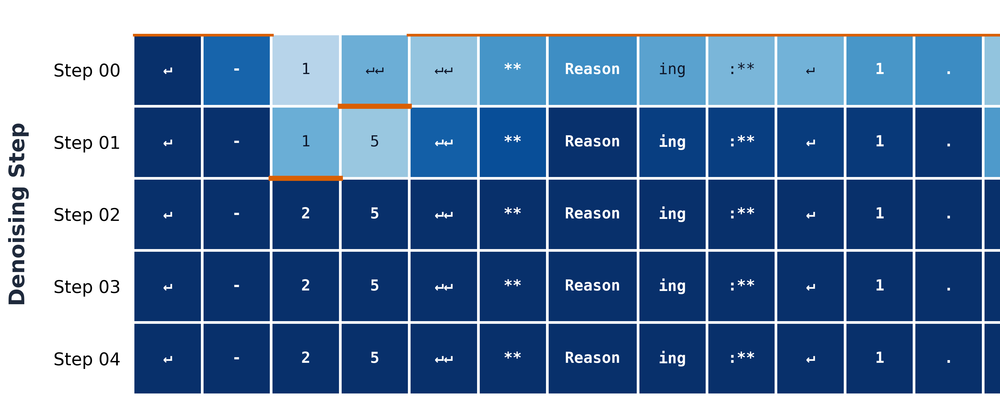
随难度变化的计算量。AR 模型每个 token 花的计算量是固定的；扩散模型借助自适应停止，简单任务少走几步，难任务多走几步（原文图 5）。附录 G.2 用两个规则相同的二进制序列任务对比：“难”的版本里每个新 token 取决于它前面两个刚生成的 token，必须按顺序推，模型大致从左到右地定下来，40 个 token（20 个数字加 20 个空格）用了 7 步；“易”的版本只是把同样的规则作用在给定的输入串上，每个输出位置只依赖输入，模型并行地一次定下来，只用了 4 步。即使是难的版本，7 步也远少于 AR 需要的 40 步。此外，最大步数本身就是一个可以调节的“延迟—质量”旋钮（原文图 10）。
结构化与受约束的输出。JSON 抽取、OCR、代码修改这类任务，输出要么受严格格式约束，要么大段照抄输入。AR 模型生成 \(N\) 个 token 总要走 \(N\) 步，哪怕是固定的样板文字；扩散模型可以一次性把可预测的结构全部锁定。附录 G.3 给了两个例子：按给定 JSON schema 从一段自我介绍里抽取信息，第一步的平均置信度已达 0.834，第二步全部收敛，两步完成；修复一段 Python 生成器被消耗两次的 bug，大部分 token 照抄输入，三步完成。
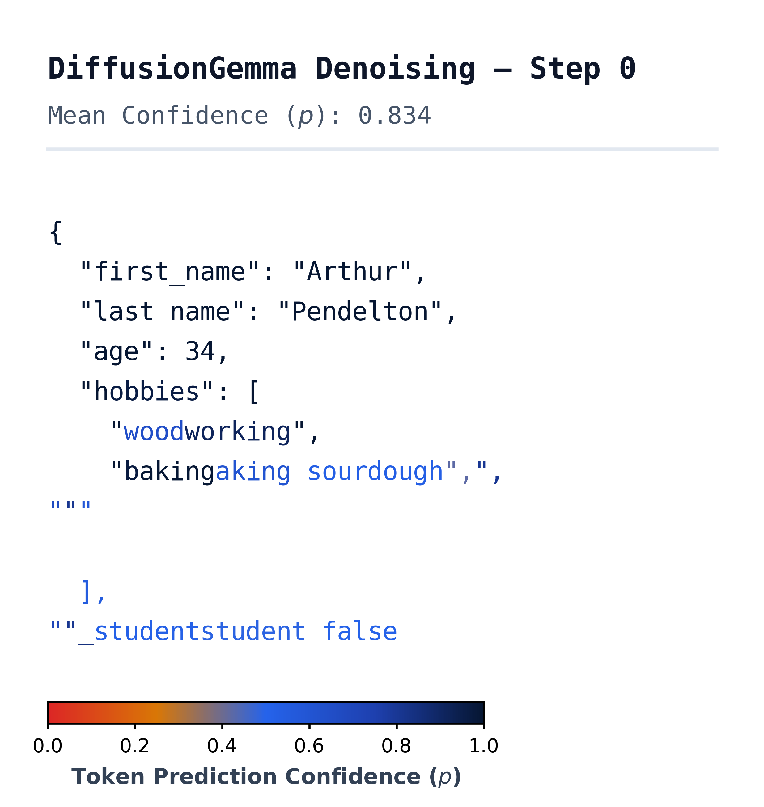
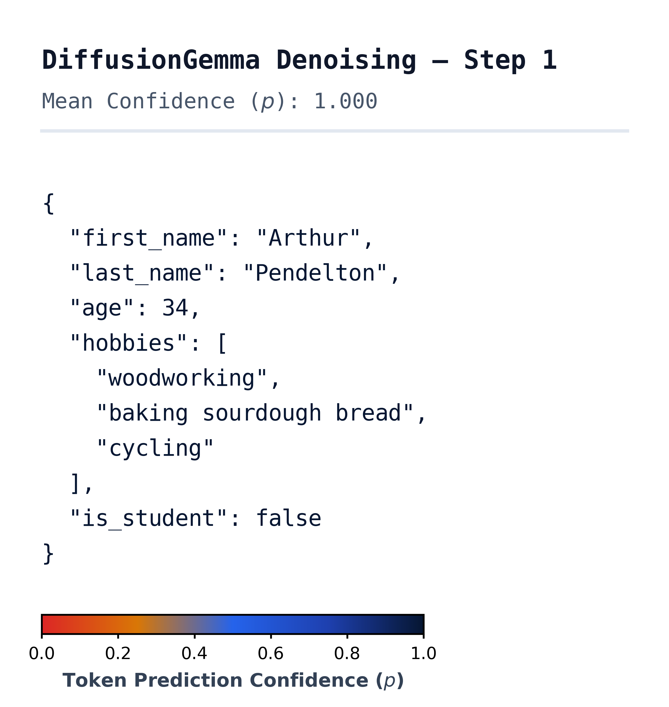
- 这些都是作者挑选的定性例子，没有统计意义上的对比。“先给答案再给推理”的提示本身就是为暴露 AR 模型的弱点设计的；正常提问时 AR 模型会先推理后作答。
- 双向修正只发生在一块 256 个 token 的画布内部。如果推理链跨越多块画布，前面已提交的画布就不能再改。
- “AR 照抄也要一步一个 token”只对普通解码成立；投机解码在草稿猜得准时（照抄正是最容易猜的情况）一次就能接受很多个 token。
- 第三方分析（arXiv 2606.14620 ↗）用 686 个提示统计了 DiffusionGemma 采样器的提交顺序，发现整体上既不是完全并行、也不是严格按块从左到右，而是带有部分从左到右的偏向，结构化 JSON 的提交顺序则基本任意。这与本节的例子方向一致，但那篇文章把模型称为“掩码离散扩散”，与报告明确写的均匀噪声不符，本站以报告为准。
10 局限与已知问题
- 质量低于 AR 起点。作者列了四个原因：没有做原生的扩散预训练，而是从 AR 权重热启动；受算力预算限制，SFT 相对较短；SD·RL 刻意追求极低延迟，本身就以牺牲最终质量为代价；架构、优化和数据配比都继承自 AR 模型，对离散扩散未必最优。前两条可以靠投入更多算力改善，后两条是这条路线的结构性取舍。
- 回答偏短。如 §5 所说，最终检查点的输出很简洁。这对速度是乘数，但也让模型用不上“更长推理换更高质量”的收益，这正是 AIME 这类任务掉分最多的原因之一。
- 偶尔的结巴。极少数情况下输出会退化成重复循环或局部结巴（例如不停重复“the the the”）。SD·RL 已经消除了绝大多数这类情况，但它是极少步数运行的直接代价：步数压得越狠，生成过程的鲁棒性越差。
- 多模态思考时偶尔漏掉结束标签。处理带图片的提示时，模型有时不输出“思考结束”的标签，即使推理本身是对的；这会导致评测程序拿不到最终答案，人为拉低分数。MMMU-Pro 上思考模式（54.3）反而低于不思考模式（66.0）就是这个原因。作者说发现得太晚，没来得及在本次发布中修复。
- 高并发时吞吐受限。如 §6 所说，约 32 个并发以内，DiffusionGemma 的每用户速度和总吞吐都优于带 MTP 的 Gemma 4；超过之后，每个 token 更高的计算成本让 AR 模型占优。这些结果没有针对大批量做优化，真实流量下的系统性分析留给未来。
11 结论与附录：相关工作、提示格式与 Mercury 2 的测速方法
结论。作者认为 DiffusionGemma 展示了一条省算力的超高速文本生成路线：用两阶段训练（SFT 与 SD·RL）把现成的 Gemma 4 26B A4B 改造成文本扩散模型，在一张 H100 上达到约 1,500 token/秒，同时保留有竞争力的推理和多模态能力。作者把它作为实验性的开放权重模型发布，连同 Hugging Face Transformers 和 vLLM 的参考实现，希望社区在此基础上做任务微调、探索新的采样算法或继续优化推理效率。
附录 A：相关工作。A.1 承认连续扩散正在复兴：例如在连续嵌入空间里一直走到最后一步才离散化的 Embedded Language Flows（本站 ELF 精读），以及把生成轨迹压缩成一步或几步的离散数据流映射方法（同类工作见本站 流映射语言模型精读），作者认为连续方法早期的失败可能源于空间几何和训练目标没选好，而不是模态本身的限制。A.2 把 DiffusionGemma 放到投机解码的脉络里：AR 草稿模型受串行生成限制；Medusa 这类并行草稿各位置独立，接受率不高；用扩散做草稿可以建模草稿 token 之间的依赖，TiDAR 用同一个模型做扩散起草和 AR 验证（作者说 DiffusionGemma 也支持这种配置），DFlash 用单独的扩散模型做草稿，但越靠后的草稿位置接受率越低；DiffusionGemma 则作为独立的扩散模型运行，没有验证这一环，能生成比“草稿—验证”方法长得多的画布。
附录 D：提示格式。对使用者有几条实用信息：和其他 Gemma 模型一样，每段对话必须以 BOS（编号 2）开头；整段块自回归生成结束时，以轮次结束标签收尾，最后一块画布剩下的位置用 EOS（编号 1）填满。对话用成对的轮次标签分隔，角色有 system、user、model 和工具返回用的 tool 四种。在系统指令里加入思考标记即可开启思考模式；即使不开启，模型仍会先输出一个空的思考通道。多轮对话时，历史里不要带上之前的思考内容，只保留最终回答。工具调用有专门的标签和一个代替普通引号的定界符。
附录 E：Mercury 2 的速度是怎么估出来的。Mercury 2 是闭源模型，作者拿不到它的 TPF 或真实 TPS，只能通过 OpenRouter 的公开 API 发请求（输入加输出最长 50,000 个 token），记录每个请求的输入 token 数、命中缓存的 token 数、输出 token 数（分思考与回答）和总耗时。耗时里没有拆分生成速度，所以作者用非负最小二乘拟合一个线性模型：
其中 \(\alpha\) 是每个输入 token 的处理时间，\(\beta\) 是每个输出 token 的生成时间，\(\gamma\) 是每个请求的固定开销（网络延迟等），生成速度取 \(1/\beta\)。系数被约束为非负，因为处理、生成和开销都只会增加时间；查询之间关闭了缓存。为了反映不同任务的速度差异，每个基准单独拟合，再做算术平均（开源模型的 TPS 也是先按任务算再平均）。两轮测量分别在 2026 年 7 月 9–10 日（11 日少量重试）和 7 月 25–26 日进行，结果一致。得到的数字是：原文图 1 用的 GPQA-Diamond 452.6、LiveCodeBench-v6 525.5，平均 489 token/秒；表 3 用的 7 项基准，high 档 600、medium 档 547 token/秒。作者自己指出，HumanEval 和 Natural2Code 里有一些离群样本：模型陷入思考循环，以极高的速度写满 50,000 个 token 却没给出有效回答，这让估计值略微偏高，也解释了为什么 high 档反而比 medium 档快。作为参照，Inception 自报在 NVIDIA Blackwell GPU 上约 1,000 token/秒，Artificial Analysis 在未披露的硬件上测得中位数约 987，并且方差很大；作者认为差异可能来自硬件、服务优化和测速数据集的不同，他们的估计反映的是用户通过 OpenRouter API 平均能感受到的速度。
英文原文 §11 ↗ · 附录 A ↗ · 附录 D ↗ · 附录 E ↗
后来怎么样了
DiffusionGemma 的权重比技术报告早公开了约七周，所以到 2026 年 10 月，它已经有了三个多月的使用记录，但作为论文仍然很新：报告目前只有 arXiv v1，没有同行评审的发表记录。下面是截至 2026-10-20 能查到的情况。
- 使用与生态。Hugging Face 上的权重仓库有 1,306 个点赞，近 30 天下载 666,448 次。发布当天 vLLM 博客宣布原生支持（称其为 vLLM 原生支持的第一个扩散语言模型），Transformers 提供了参考实现（报告引用的 PR #46540）；Unsloth 提供了使用文档；Google 的发布博客说 llama.cpp 的官方支持“即将到来”，本站没有核实是否已经落地。报告提到的下游用途（多语言语音识别、放射科报告起草）来自报告本身的引用，本站没有独立核实。
- 围绕它的分析工作。两篇论文比技术报告还早出现。一篇是 Asaria 等人的 Neither Parallel Nor Sequential（2606.14620）↗，统计了采样器实际提交 token 的顺序（见 §9 的提示）。另一篇是 Google DeepMind 的 How Transparent is DiffusionGemma?（2606.20560）↗，作者中有几位也是 DiffusionGemma 的作者：它担心自条件这条连续通道会让推理变得不透明，发现两次可解释状态之间的“不透明串行计算深度”乍看是 Gemma 4 的 28.6 倍，但把步与步之间传递的信息映射回一个可解释的 token 瓶颈（且不损失下游表现）后，只有 Gemma 4 的 1.1 倍；监控性与 Gemma 4 相近。这正是 §3.2 那段可解释性旁注的依据。
- 和同期工作的关系。本站同一批精读里，Nemotron-Labs-Diffusion 与 LLaDA2.1 是报告直接对比的两个开放权重扩散模型；TiDAR 与 WeDLM 代表“扩散与 AR 混合”和“把 AR 模型改成块扩散”的其他做法；Seed Diffusion 与 Mercury 是更早的工业报告。和它们相比，DiffusionGemma 的独特之处是均匀噪声、开放权重、完整的速度账本，以及把 RL 与少步蒸馏合并成一个阶段。
- 还没有的东西。截至 2026-10-20，本站没有找到在相同条件（单卡 H100、FP8、批大小 1）下独立复现报告速度数字的公开结果，也没有找到对 SD·RL 的独立复现；SD·RL 的目标函数仍未公开。报告承诺的“针对大批量优化后的吞吐”和“真实流量下的分析”也还没有后续发布。
想看与 Mercury、Seed Diffusion 并排的结构对照表和简答题，见旧版的工业 dLLM 结构拆解页。
作者
报告以团队名义署名，单位为 Google DeepMind。下面只列报告本身能查证的分工信息和报告参考文献里能对上的关联工作，不对个人背景做推断。
影响力
- 引用：见页首（Semantic Scholar 快照）。
- 发表：Google DeepMind 技术报告，arXiv 2608.00146 v1（2026-07-31），截至 2026-10-20 没有同行评审的发表记录。
- 开放权重：google/diffusiongemma-26B-A4B-it，Apache 2.0 许可，仓库创建于 2026-06-09；截至 2026-10-20 有 1,306 个点赞、近 30 天下载 666,448 次。
- 推理与微调实现：Hugging Face Transformers（PR #46540）；vLLM（PR #45163，2026-06-10 博客）；微调工具 google/hackable_diffusion（JAX）。
- 发布材料：Google 发布博客（2026-06-10）；官方文档。
延伸阅读
- 同类工业报告：Mercury · Seed Diffusion · Nemotron-Labs-Diffusion · LLaDA2.0 · LLaDA2.1
- 从 AR 模型改造：Dream 7B · Fast-dLLM v2 · SDAR · WeDLM
- 块扩散与缓存：BD3-LM · Fast-dLLM · dKV-Cache
- 噪声与理论基础：D3PM · MDLM · Duo（均匀态扩散） · 离散流匹配
- 投机解码与混合解码：投机解码 · EAGLE · TiDAR · DFlash
- 少步化与 RL：dParallel · d3LLM · d1 · TraceRL
- 推理服务背景：vLLM / PagedAttention · DeepSeek-V3（MoE）
- 旧版路线：工业 dLLM · 均匀噪声 · 块扩散 · AR 改块扩散 · 混合解码 · 从头讲起
- 返回论文书架
本页是对技术报告的中文精读笔记，正文为本站撰写，并非翻译。数字与结论以原文为准：arXiv:2608.00146（本页依据 v1）。标“原文图”的图片取自报告 arXiv 版，arXiv 页面标注的许可为 CC BY 4.0，图片未做修改，版权归 DiffusionGemma Team / Google DeepMind 所有（报告 PDF 首页另印有“© 2026 Google DeepMind. All rights reserved”，本站按 arXiv 标注的许可使用）。标“示意图”的图由本站绘制；标“读自原图”的数字是从原图上读出的近似值；交互演示为本站组件。